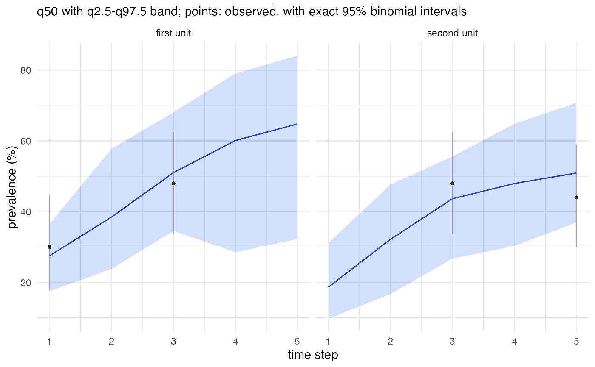

With time, a map of one statistic for one time step. This needs a
frame with polygons. Groups are drawn by colouring their areas. Without
time, time series of chosen areas or groups, with the outer quantiles
as a band. With data = TRUE, the observed prevalence (positives /
tested) of every surveyed area and time step in the panel is added, with
its exact (Clopper-Pearson) 95% binomial interval. In a group's panel
these are the surveyed areas of the group, while the band is for the
group as a whole, so the two need not agree.
Usage
# S3 method for class 'stareal_pred'
plot(
x,
group = "area",
time = NULL,
ids = NULL,
stat = "mean",
data = TRUE,
labels = NULL,
...
)Arguments
- x
A
stareal_pred.- group
"area"or one of the groupings predicted.- time
For a map: a time label (as in
x$time$labels) or a time step number.- ids
For time series: the area or group ids to show (default: up to six, those with the most people tested first).
- stat
For a map: the statistic to show (a column of the table, e.g.
"mean","q50","p_gt_5").- data
For time series: add the observed prevalence and its exact binomial interval.
- labels
For time series: panel titles in place of the ids. Either one per id, in the order of
ids, or a vector named by id (ids not named keep their id). Labels must be unique.- ...
Not used.
Examples
fr <- areal_lattice(4, 4)
sim <- simulate_areal(fr, time_frame(n_steps = 5), n_cells = 30, seed = 1)
fit <- fit_areal(sim, control = list(n_iter = 100, n_burn = 50, n_store = 25, n_chains = 1,
ess_sweeps = 2, verbose = FALSE))
pr <- predict(fit, verbose = FALSE)
plot(pr, ids = c("r1c1", "r1c2"), labels = c("first unit", "second unit"))
